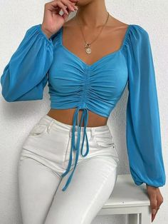
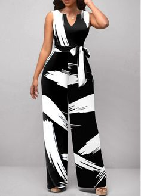
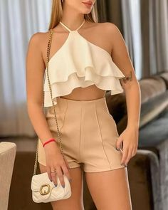
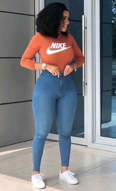
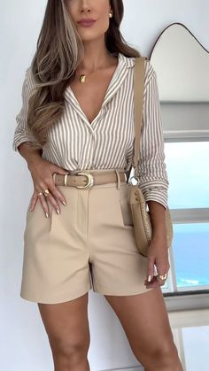
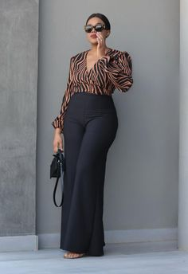
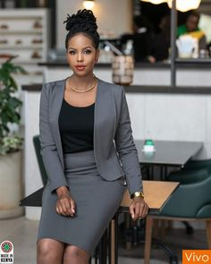
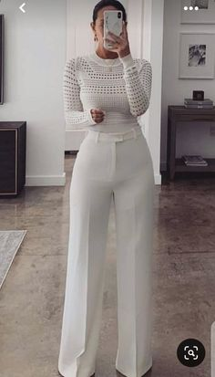
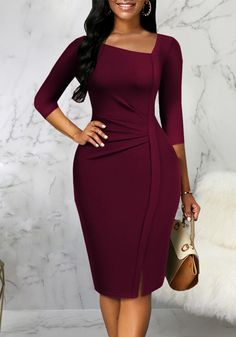
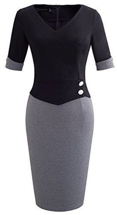

STYLE
Style is a trendsetting online destination redefining fashion through the art of thrift. Our platform is a curated haven for those seeking distinctive clothing with a sustainable yet affordable twist. We meticulously source and offer a diverse range of pre-loved pieces, ensuring each item not only makes a style statement but also contributes to a more eco-conscious wardrobe. Explore the intersection of fashion, sustainability and individuality with Style-where every purchase tells a story and embraces a brighter greener future.
Explore timeless vintage pieces from casual essentials to statement pieces, our collection spans dresses, tops, trousers, cardigans, hoodies and accessories.
Casual wear
In the casual wear section at Style, comfort meets chic in a harmonious blend. From cozy t-shirts and relaxed jeans and cargos to effortlessly stylish dresses. Each piece is handpicked to redefine your everyday wardrobe.





Official wear
Step in the world of sophistication with our official wear collection at style. Elevate your professional wardrobe with a curated selection of tailored blazers, crisp dress shirts, elegant blouses and polished trousers. Style's official wear exudes confidence and professionalism. Discover the perfect balance of style and corporate elegance as you explore our collection.




